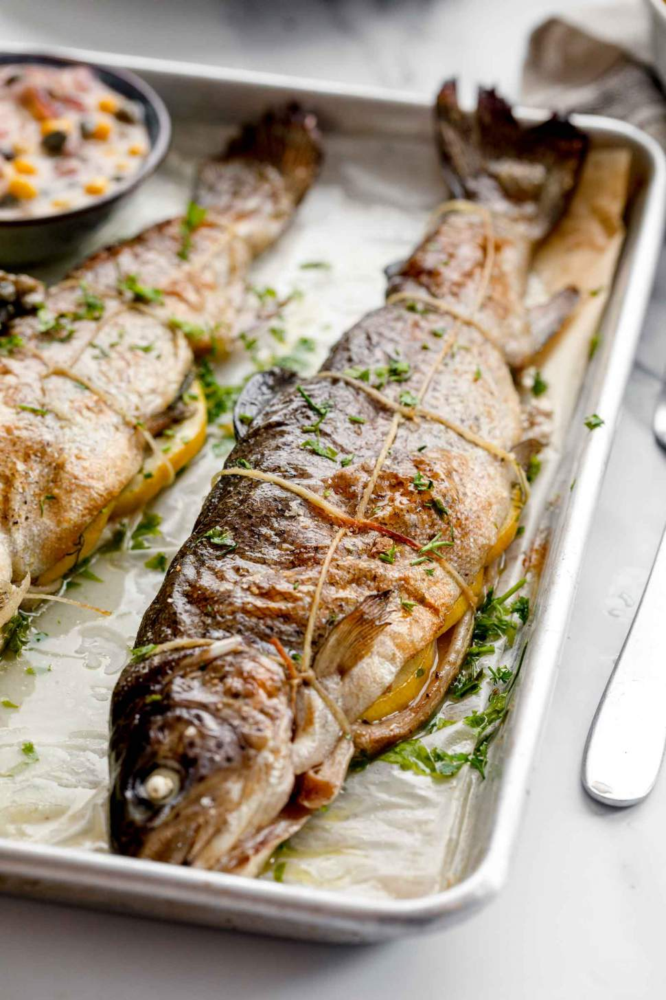

Baked Rainbow Trout

This fish is so fresh that it's gonna jump!
The perfect recipe for the lazy chef that wants to
do some delicious food to that special person.
Just make sure you combine this meal with a good
wine. Enjoy!
Ingredients
- 2 teaspoons olive oil, divided
- 2 whole rainbow trout, gutted and cleaned
- 1/4 teaspoon dried dill weed
- 1/4 teaspoon dried thyme
- salt to taste
- 1/2 large onion, sliced
- 2 thin slices lemon (optional)
- 2 tablespoons hot water
- Ground black pepper to taste
Steps
- Preheat the oven to 200 degrees C. Grease a 9x13 inch
baking dish with 1 teaspoon olive oil
- Place trout in the prepared baking dish and coat with
remaining olive oil. Season inside and outside of fish
with dill, thyme and salt. Stuff each fish with onion
slices; grind pepper on top. Place 1 lemon slice on each
fish.
- Bake in the preheated oven for 10 minutes; add hot water
to dish. Continue baking until fish flakes easily with
a fork, about 10 minutes more.